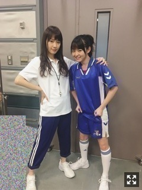
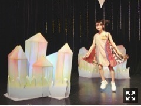

| 2017/11 03 Fri | 朝夜朝夜。786回目 |
こんばんー
東京ドームまでもう少しだー
寒さで朝すぐ起きるようになりました。
毛布引っ張り出しました〜
あと、イエティーのぬいぐるみ買ったよ〜
もふもふしててあったかい！
CDTVハロウィン音楽祭にて
小学生が憧れる職業の格好して
ガールズルール披露しました。

サッカー選手！と、コーチ！
バスケとサッカー

なにこの集団、！！！
大阪のセブンイレブンイベントの時。
なんでこんなに前髪うねってるんだろう
袋に天然水入れました。
リッチポテトのオニオンのやつだいすきです。
いつもお世話になってます！！！
パシフィコ横浜で握手会。
関東最後の握手会でした。
来てくださったみなさん
ありがとうございました！！
明日は京都だよ〜
京都といえば、、
《伊藤万理華の脳内博覧会》
KYOTO NIPPON FESTIVAL
10月21日(土)〜12月3日(日)
一緒にいかがでしょう、？
11月11日はトークイベントでおじゃまします。
そしてそしてまさかの
福岡PARCOでも開催決定致しました〜
すげー！
九州の皆さん、ぜひ足を運んでください✨
《伊藤万理華の脳内博覧会mini》
FUKUOKA PARCO 6F
11月17日(金)〜12月3日(日)

@nounaihakurankai
伊藤万理華の脳内博覧会official
まりか
コメント(754)
2017/11/03 20:12